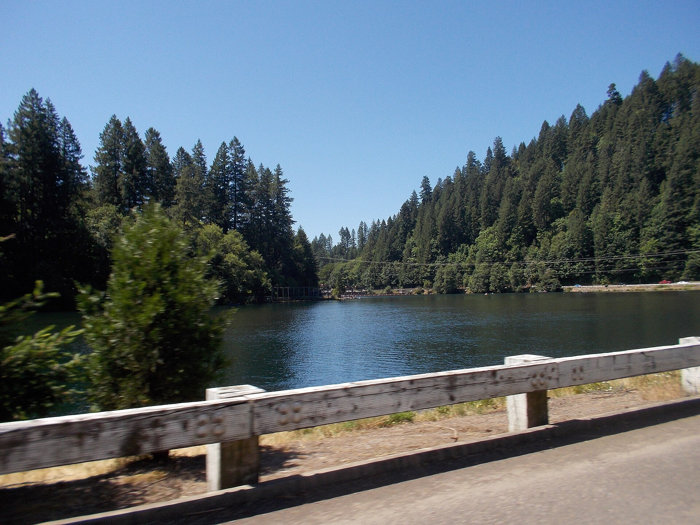

Where I work hardest
Three areas I know street by street.
I cover all of Lane County, but these three are where I spend the most time, know the most people, and can tell you what a place is actually like instead of reading you the listing description.